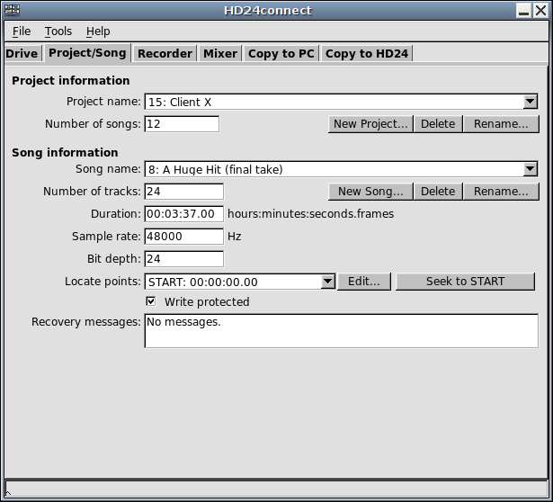
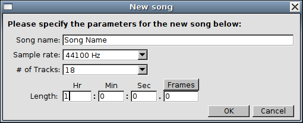
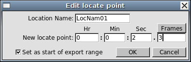

The next tab of the user interface is Project/Song. It consists of the Project information area and the Song information area:

The Project information area shows a dropdown box which allows you to choose the project that you want to look at, along with the total number of songs in the project.
By default, the last accessed project will be displayed. The Number of songs field displays the total number of songs that are recorded within the currently selected project. The Rename... button is similar to the Rename... button on the Drive Info tab and will allow you to set the name of the project. With the buttons Delete and New Project..., existing projects can be removed and new ones created.
Below the Project info, you will find the Song information area. This area contains various controls that are related to individual songs. By default, it will display the last song accessed by the HD24 recorder. The information displayed includes the number of tracks, song duration, sample rate, bit depth (usually 24 bit) and write-protect status. As is the case with the Project area, there are buttons to delete, rename and create songs.
To create a song, first select the project in which you want to create the song, then click the New song... button. The following dialog box will appear:

This dialog permits you to enter song name, sample rate, number of tracks and song length. HD24tools allows you to create songs with a few alternate track counts not usually offered by the HD24 recorder itself, nor any other software.
The song length is optional; you can either leave it at 0 or specify the desired song length. In the last case, during song creation, the song will be lengthened to the given length and absolute silence will be written to it.
Pre-recording silence can be seen as a recovery prevention measure; should a power failure occur when recording to a pre-silenced song, drive space has already been claimed and the drive will be left in a consistent state, eliminating the need for data recovery (for more information about this, see the chapter on data recovery).
The downside of pre-recording silence is that it places heavier demands on the drive when actually recording, because at recording time it requires the drive to read as well as write. In contrast, in zero-length songs, write-only operation will suffice.
The song dropdown box allows you to select songs belonging to the currently selected project. In addition, a special, unnumbered song entry named --All songs-- is available in the Song name dropdown box. Choosing this special song entry tells HD24connect that you wish to selects all tracks of all songs of the entire project for batch transfers from HD24 drives to computer. The export range for the song will be fixed: only entire songs will be exported.
By clicking on the sample rate field, you can switch the sample rate of the song from 44100 to 48000 and back, as well as from 88200 to 96000 and back.
As higher sample rates occupy 2 drive tracks per audio channel, it is not possible to switch between lower (44100, 48000) and higher (88200, 96000) sample rates. Clicking on the sample rate field actually changes the sample rate of the song on disk; it will also cause a change of pitch of the audio. The transfer options on the Copy to PC tab permit setting the sample rate of the transferred audio files without affecting the rate on the HD24 drive.
By default, HD24connect displays durations and time codes in the format HOURS:MINUTES:SECONDS.FRAMES. This matches the behaviour of the HD24 recorder.
The Song information area shows the list of locate points that are defined for the currently selected song. The usual 25 locate points that are defined by the HD24 recorder are listed, as well as a virtual locate point END which is located just after the last sample of the song.
These locate points can be set from HD24connect, and they are the way that HD24connect knows which range of audio to export during transfers.
The Edit... button next to the locate point list allows us to edit the locate point that is currently being selected. When this button is clicked, a dialog will pop up.

This dialog will permit us to change the name of the locate point, but more importantly also the time code before which the locate point is situated. The button above the subseconds allows us to switch back and forth between hundreths of seconds, frames (30th seconds) and samples, which permits us sample accurate wave export*, should we wish to do so.
The checkbox, which is only displayed for locatepoint 1 and 2, is enabled by default. When editing locatepoint 1 and 2, this will cause these locatepoints to automatically be used as start and end of the export range, respectively.
It should be noted that the locate points should be seen as being located between the samples; a locate point that has a value of 1 (sample) is located just before sample 1 and just after sample 0. This notion is important when we want to export data split up in several blocks without overlapping samples: we should not do anything such as incrementing sample offsets to allow this.
Just like on the HD24 recorder, locate point 0 (which is called START by default) doesn't indicate a position within the song but the offset of the song itself. During song exports, HD24connect will ignore the actual value of this locate point and always consider it to be just before the start of the song. Because of this, you may change the value of this locate point, but this will have no effect whatsoever.
Next to the locate point dropdown, you will find a button labeled "Seek to <position>". This button is related to audio playback. When selecting different locate points, the label of the button will change to reflect the chosen locate point. Clicking on the button will move the transport cusor/tape head to the given locate point. In combination with manually setting locate points, this allows us sample-precise jumps to anywhere within the song*. It should be noted that it is not possible to jump beyond the end of the song. For the Seek button to work, the transport must have been previously activated by clicking the Stop button on the recorder tab.
Simply tick or untick the Write protected checkbox to prevent a song from accidentally being overwritten- or to unlock a protected song, respectively.
* In high-samplerate modes (88.2 and 96 kHz), locate points only occur every two samples and as such true sample accuracy can not be obtained.
It is possible to keep the songs inside a project ordered alphabetically. To re-order songs, simply choose Tools->Alter order of songs in project->Sort alphabetically. This will sort the songs in a project alphabetically, ascending by song name. If you wish to enforce a certain song order, simply rename each song so that it starts with two digits representing the desired sort order, then sort.